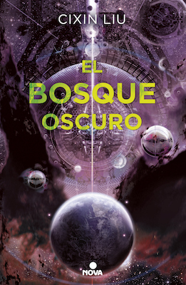

El bosque oscuro (Trilogía de los tres cuerpos, #2)
Reseña por Jorge I. Zuluaga

Ver reseña en GoodReads (necesita cuenta)
Puede sonar a una exageración, pero no me cabe la menor duda de que Liu Cixin será recordado como un Julio Verne del siglo XXII.
Las tecnologías que imagina (el precinto mental, las bombas de cuna, la ropa luminosa, la nieve de aceite, el duro material nuclear, la estructura de naves espaciales y su fantástico modo «abisal», e incluso las balas de meteoritos, etc.) son descritas con un detalle increíble y son tan originales para cualquier habitante del siglo XXI como solo podrían serlo las tecnologías espaciales descritas por Verne hace casi dos siglos.
Su solución a la «paradoja de Fermi», es decir, a la famosa cuestión de si hay otras civilizaciones en la Galaxia (distintas a la nuestra) y, si la tecnología de viajes espaciales está al alcance de ellas una vez que se produce en sus sociedades la explosión tecnológica, cómo es que no han llegado hasta acá, es sencillamente asombrosa (naturalmente no profundizaré en ella para no arruinarles la novela).
Tal vez muchos no la encuentren muy original (hay que recordar que se han pensado decenas de respuestas posibles a esta pregunta), pero la manera como Cixin la desarrolla en esta obra y el papel que juega en su desenlace es maravilloso y sorprendente.
Me ha encantado también la profundidad humana de la novela. Tal y como lo hizo en El problema de los tres cuerpos, la psicología y la sociología juegan un papel central en El bosque oscuro.
Cixin logra, con su prosa impecable (a veces tengo que recordar que he leído una traducción del mandarín, pero me gusta imaginarme que en su lengua la novela es tan bella como resulta ser en español), transportarnos a los lugares más increíbles, desde el «paraíso» rodeado de montañas nevadas al que se retira felizmente Luo Ji, hasta las increíbles ciudades subterráneas del futuro, pasando por las fascinantes naves de la flota espacial que esperan con ansiedad revelar los secretos de la primera sonda trisolariana.
Con su impecable pluma, nos transporta además a la mente de hombres y mujeres que no han vivido y posiblemente solo vivirán en esta novela, pero que parecen increíblemente reales: Ye Wenjie (madre de la sociología cósmica), Luo Ji (el vallado enamorado), Shi Qiang (el policía pragmático y brillante), Zhang Beihai (el viejo marino) o la bellísima Zhuang Yan (de la que es difícil no enamorarse, como tampoco es difícil entender por qué Luo Ji se enamoró en primer lugar de su versión literaria).
Dos sorpresas: la novela menciona a Colombia (el nombre de una nave de la flota espacial, presten atención) y a Venezuela, país de origen del vallado Rey Díaz (una suerte de personaje inspirado en Nicolás Maduro, pero mucho más inteligente que el real).
Son tantas cosas las que se me vienen a la cabeza al pensar en El bosque oscuro y los 210 años durante los que se desarrolla, que solo espero algún día poder compartir con alguien (o con muchos) las ideas increíbles de esta novela. Una vez penetras en esta historia, sientes que solo una «terapia de grupo» puede satisfacer unos irrefrenables deseos por compartir con otros tus impresiones.
Ya empiezo sin demora a leer la tercera parte (El fin de la muerte) y los conmino a que, si no han empezado siquiera con El problema de los tres cuerpos, ¡empiecen ahora mismo!